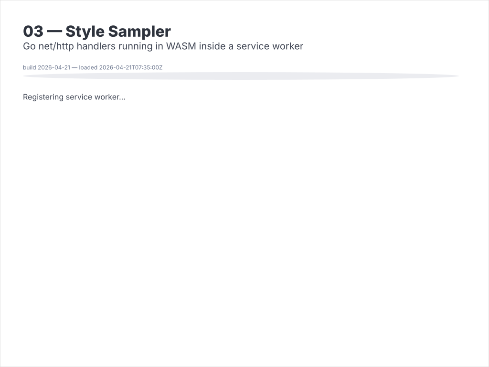

03 — Style Sampler
One Go codebase, six page layouts, two deployment targets. The same template files render a multi-page site either as a classic HTTP server (main.go) or entirely inside the browser as a WebAssembly binary (main_wasm.go). Both builds share one model, one set of templates, and one loader.
Interactivity level: 6 — WASM (browser-only, no server)


How lofigui helps here
lofigui is deliberately small. For this example it contributes four things:
- A print-style output buffer —
lofigui.Print,Markdown,Tableaccumulate HTML in a shared buffer (model.go:sampleOutput). The teletype content is identical in every layout. - A template-inheritance loader —
lofigui.NewControllerFromFSparsesbase.htmlalongside the named child template (seecontroller.go:NewControllerFromFS), so Go's stdlib{{block}}/{{define}}works with embedded filesystems — the only source a WASM build can reach. - One render call with two shapes —
ctrl.RenderTemplate(w, ctx)writes to anhttp.ResponseWriteron the server;ctrl.RenderToString(ctx)returns a string for the WASM build to hand back to JavaScript. Same controller, same context. - Built-in
/assets/bulma.min.css—App.RunandApp.RunWASMregisterlofigui.ServeBulmaso every demo (dev server or WASM) gets Bulma without an outbound CDN fetch.
Everything else — HTTP routing, the JS bridge, the page navigation — is plain Go or plain JavaScript.
Layout styles
| Style | Navbar | Layout | Use case |
|---|---|---|---|
| Scrolling | Default, scrolls with page | Single column | Simple tools (examples 01, 02) |
| Fixed | Pinned to top | Single column | Dashboards needing persistent nav |
| Three-Panel Nav | Top + left sidebar | Left nav, right content | Multi-page apps with page tree |
| Three-Panel Controls | Top + left sidebar | Left form, right output | CLI tools with parameter dialogs |
| Full Width | Minimal top bar | Single wide column | Maximum output area |
Template inheritance
All styles share a base template using Go's html/template {{block}} / {{define}} inheritance:
base.html → <html>, <head>, Bulma CSS, {{block "navbar" .}}, {{block "content" .}}
style_scrolling.html → extends base: teal scrolling navbar + content
style_fixed.html → extends base: red fixed navbar + padded content
style_three_panel_nav.html → extends base: yellow navbar + columns layout
...
base.html declares blocks with {{block "name" .}}default{{end}}. Each child template overrides them with {{define "name"}}...{{end}}:
<!-- base.html -->
<body>
{{block "navbar" .}}{{end}}
{{block "content" .}}{{end}}
</body>
<!-- style_scrolling.html -->
{{define "navbar"}}<nav class="navbar is-primary">…</nav>{{end}}
{{define "content"}}<section class="section">{{.results}}</section>{{end}}
html/template. NewControllerFromFS parses base.html alongside the named child so inheritance works with no extra setup, in both server and WASM builds.
Shared loader — model.go
Both main.go and main_wasm.go delegate template setup to model.go, which embeds templates/ once and parses every layout against base.html:
//go:embed templates
var templateFS embed.FS
var templateNames = []string{
"home.html",
"style_scrolling.html",
"style_fixed.html",
"style_three_panel_nav.html",
"style_three_panel_controls.html",
"style_fullwidth.html",
}
func loadControllers() map[string]*lofigui.Controller {
ctrls := make(map[string]*lofigui.Controller, len(templateNames))
for _, name := range templateNames {
ctrl, err := lofigui.NewControllerFromFS(templateFS, "templates", name)
if err != nil { panic(err) }
ctrls[name] = ctrl
}
return ctrls
}
NewControllerFromDir) — but using embed.FS everywhere means the binary is self-contained and the template-loading code is identical between server and WASM. Fewer code paths, fewer surprises, one deployable binary.
The server — main.go
main.go exists because the HTTP side has to register routes, parse request URLs, and write to an http.ResponseWriter. Everything WASM doesn't have:
//go:build !(js && wasm)
var pathToTemplate = map[string]string{
"/": "home.html",
"/style/scrolling": "style_scrolling.html",
"/style/fixed": "style_fixed.html",
"/style/three-panel-nav": "style_three_panel_nav.html",
"/style/three-panel-controls": "style_three_panel_controls.html",
"/style/fullwidth": "style_fullwidth.html",
}
func main() {
controllers := loadControllers()
for path, name := range pathToTemplate {
tpl := name
http.HandleFunc(path, func(w http.ResponseWriter, r *http.Request) {
controllers[tpl].RenderTemplate(w, lofigui.TemplateContext{
"results": template.HTML(sampleOutput()),
"current_path": r.URL.Path,
})
})
}
http.HandleFunc("/favicon.ico", lofigui.ServeFavicon)
http.HandleFunc("/assets/bulma.min.css", lofigui.ServeBulma)
http.ListenAndServe(":1340", nil)
}
The build tag !(js && wasm) excludes this file from the WASM build — net/http, http.ListenAndServe, and http.HandleFunc are the server-only pieces.
The WASM entry point — main_wasm.go
main_wasm.go exists because the WASM side needs syscall/js to expose a Go function to JavaScript, and a blocking select{} to keep the Go runtime alive for callbacks. Those can't link into a non-WASM build:
//go:build js && wasm
var controllers = loadControllers()
func goRenderPage(this js.Value, args []js.Value) any {
templateName := args[0].String()
currentPath := args[1].String()
html, err := controllers[templateName].RenderToString(lofigui.TemplateContext{
"results": template.HTML(sampleOutput()),
"current_path": currentPath,
})
if err != nil { return js.ValueOf("<p>Render error: "+err.Error()+"</p>") }
return js.ValueOf(html)
}
func main() {
js.Global().Set("goRenderPage", js.FuncOf(goRenderPage))
js.Global().Call("wasmReady")
<-make(chan struct{}) // keep the Go runtime alive for JS callbacks
}
syscall/js; the WASM build can't see net/http.ListenAndServe. Splitting on //go:build lets each file import only what its target supports — no stub functions, no conditional imports inside one file.
Same code, two targets
| Aspect | Server (main.go) |
WASM (main_wasm.go) |
|---|---|---|
| Build tag | !(js && wasm) |
js && wasm |
| Template loading | loadControllers() in model.go — identical |
loadControllers() in model.go — identical |
| Render call | ctrl.RenderTemplate(w, ctx) |
ctrl.RenderToString(ctx) |
| Navigation | http.HandleFunc per URL |
app.js calls goRenderPage() |
| Entry point | http.ListenAndServe(":1340", …) |
js.Global().Set("goRenderPage", …) + select{} |
| Imports | net/http |
syscall/js |
Model code (sampleOutput in model.go) is unchanged between builds. The template-loading helper is shared. The only real differences are the entry point and how the rendered HTML reaches the browser.
Client-side routing — templates/app.js
The WASM demo is a single static HTML page (demo.html) containing the top style-selector bar. Everything below that bar is replaced by whatever HTML goRenderPage returns. app.js is the glue:
const outputDiv = document.getElementById('output');
const buttons = document.querySelectorAll('#style-buttons button');
// Mirror of pathToTemplate in main.go — used to route in-page links.
const pathToTemplate = {
'/': 'home.html',
'/style/scrolling': 'style_scrolling.html',
'/style/fixed': 'style_fixed.html',
'/style/three-panel-nav': 'style_three_panel_nav.html',
'/style/three-panel-controls': 'style_three_panel_controls.html',
'/style/fullwidth': 'style_fullwidth.html',
};
function renderStyle(templateName, path) {
outputDiv.innerHTML = goRenderPage(templateName, path); // call into WASM
buttons.forEach(b => b.classList.toggle('is-outlined',
b.dataset.template !== templateName));
}
// 1. Top button bar — explicit data-template/data-path attributes.
buttons.forEach(b => b.addEventListener('click',
() => renderStyle(b.dataset.template, b.dataset.path)));
// 2. In-page links (home.html card "View" buttons, sidebar navs) —
// delegated click handler maps server-style /style/* hrefs to templates.
outputDiv.addEventListener('click', e => {
const a = e.target.closest('a[href]');
if (!a) return;
const tpl = pathToTemplate[a.getAttribute('href')];
if (!tpl) return;
e.preventDefault();
renderStyle(tpl, a.getAttribute('href'));
});
// 3. WASM ready — Go signals completion by calling window.wasmReady.
window.wasmReady = () => renderStyle('home.html', '/');
href="/style/scrolling"). On the server those paths are real HTTP routes; in WASM the page would navigate to the site root and 404. The delegated click handler on #output catches anything that looks like an internal route and calls goRenderPage instead. Templates stay untouched.
wasmReady? main_wasm.go calls js.Global().Call("wasmReady") after exposing goRenderPage. That's the signal that the WASM runtime is initialised and safe to call; until then, app.js leaves the loading progress bar in place.
The three click paths — top bar, in-page links, initial render — all end up at the same renderStyle function. The WASM binary does the actual rendering; app.js is only responsible for routing the click into Go.
Binary size
The WASM binary includes html/template, the embedded templates, and lofigui itself. Expect ~9 MB uncompressed (~2.4 MB gzipped) for standard Go WASM.